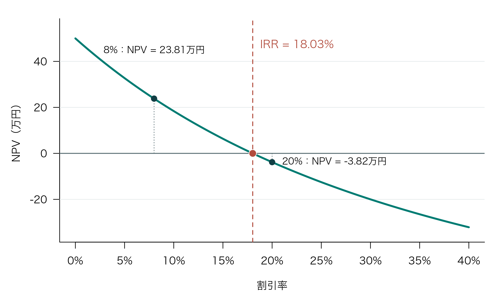
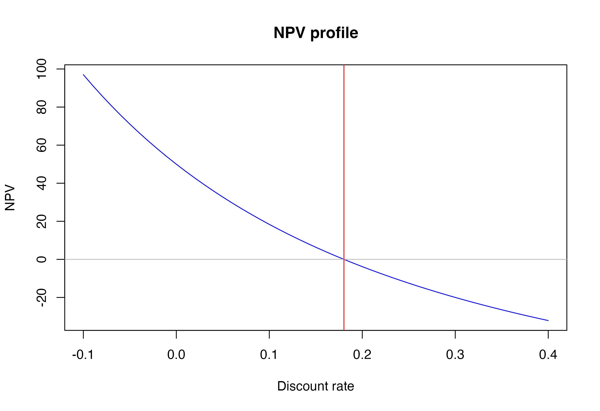

第5回：演習：現在価値・NPV・IRR
到達目標
- お金の時間的価値を理解し、現在価値を計算できる
- NPVとIRRの概念を理解し、活用できる
- Rのベクトルと自作関数を使ってNPVとIRRを計算できる
- NPVプロファイルを作図し、割引率とNPVの関係を解釈できる
Chapter 1｜理論：現在価値・NPV・IRR
1. お金の時間価値
同じ100万円でも、今日受け取る100万円と1年後に受け取る100万円は、通常同じ価値ではない。今日受け取った資金はすぐに利用または運用できる一方、将来の資金を受け取るまでには時間がかかり、不確実性も存在する。この考え方をお金の時間価値という。
投資や事業に伴う資金の受取りと支払いを、キャッシュフロー（cash flow: CF）という。投資を行う側から見て、受取りを正、支払いを負の金額で表す。
例えば、現在100万円を支払い、1年後と2年後にそれぞれ60万円を受け取る投資を考える。この投資では、現在に−100万円、1年後に60万円、2年後に60万円のキャッシュフローが発生する。受取額の合計は120万円であり、支払額を20万円上回る。ただし、この差額は、支払いから受取りまでの時間を考慮していない。
この投資の価値を評価するには、現在の支払いと将来の受取りを、同じ基準で比較する必要がある。お金には時間価値があるため、異なる時点の金額をそのまま足し合わせても、投資が生み出す価値を適切に評価することはできない。そこで、すべてのキャッシュフローを同じ時点の価値へ換算してから比較・合計する。ここでは、現在を\(t=0\)とし、将来の金額を現在の価値へ換算する方法を学ぶ。
2. 将来価値と現在価値
現在の金額を\(PV\)、1期間当たりの利率を\(r\)とすると、1期間後の将来価値\(FV_1\)は
\[ FV_1=PV(1+r) \]
である。したがって、1期間後の金額を現在へ戻すと
\[ PV=\frac{FV_1}{1+r} \tag{1}\]
となる。\(1/(1+r)\)を割引因子という。
数値例
1年後に受け取る110万円を、年10%で現在価値へ換算する。
\[ PV=\frac{110}{1+0.10}=100\text{万円} \]
つまり、年10%という基準の下では、「現在の100万円」と「1年後の110万円」は同じ価値を持つ。
3. 複数期間の現在価値
\(t\)期間後に受け取るキャッシュフローを\(CF_t\)とすると、その現在価値は
\[ PV(CF_t)=\frac{CF_t}{(1+r)^t} \tag{2}\]
である。期間が長いほど\((1+r)^t\)が大きくなるため、他の条件が同じなら現在価値は小さくなる。
例えば、割引率が8%のとき、1年後の30万円と3年後の50万円の現在価値は
\[ \frac{30}{1.08}=27.78, \qquad \frac{50}{1.08^3}=39.69 \]
万円である。受取額が大きくても、受取時点が遅ければ割引の影響は大きくなる。
ノート割引率が表すもの
割引率は、資金を別の用途へ使った場合に得られる収益機会、資金調達コスト、キャッシュフローの不確実性などを反映する評価基準である。割引率の選択によって現在価値とNPVは変化するため、計算結果には使用した割引率を必ず明記する。
4. 正味現在価値（NPV）
ある投資案について、時点0の初期投資額を\(I_0\)、第\(t\)期のキャッシュフローを\(CF_t\)、割引率を\(r\)、最終期を\(T\)とする。正味現在価値（Net Present Value: NPV）は
\[ NPV(r)=-I_0+\sum_{t=1}^{T}\frac{CF_t}{(1+r)^t} \tag{3}\]
と定義される。
時点0のキャッシュフローを\(CF_0=-I_0\)と書けば、次のようにまとめられる。
\[ NPV(r)=\sum_{t=0}^{T}\frac{CF_t}{(1+r)^t} \tag{4}\]
時点0では\((1+r)^0=1\)であるため、初期投資額は割り引かれない。
5. NPVによる判断
独立した投資案では、基本的な判断規則は次のとおりである。
| NPV | 判断 | 意味 |
|---|---|---|
| \(NPV>0\) | 採用 | 必要な収益率を上回る価値を生み出す |
| \(NPV=0\) | 無差別 | 必要な収益率とちょうど一致する |
| \(NPV<0\) | 棄却 | 必要な収益率を満たさない |
複数の相互排他的な投資案から一つだけ選ぶ場合は、同じ前提と割引率の下で、原則としてNPVが最も大きい案を選ぶ。
NPVの数値例
次のキャッシュフローを考える。金額の単位は万円とする。
| 時点\(t\) | 0 | 1 | 2 | 3 | 4 |
|---|---|---|---|---|---|
| キャッシュフロー\(CF_t\) | -100 | 30 | 40 | 50 | 30 |
割引率を8%とすると、NPVは
\[ \begin{aligned} NPV(0.08) &=-100+\frac{30}{1.08} +\frac{40}{1.08^2} +\frac{50}{1.08^3} +\frac{30}{1.08^4} \\ &=23.81\text{万円} \end{aligned} \]
となる。NPVが正であるため、割引率8%を評価基準とするなら、この投資案は採用可能である。
6. 内部収益率（IRR）
内部収益率（Internal Rate of Return: IRR）は、NPVを0にする割引率である。IRRを\(r^*\)と書くと
\[ 0=-I_0+\sum_{t=1}^{T}\frac{CF_t}{(1+r^*)^t} \tag{5}\]
を満たす\(r^*\)がIRRである。
前の数値例では、
\[ 0=-100+\frac{30}{1+r^*} +\frac{40}{(1+r^*)^2} +\frac{50}{(1+r^*)^3} +\frac{30}{(1+r^*)^4} \]
を満たす\(r^*\)を求める。解は約18.03%である。
7. IRRによる判断
キャッシュフローが「最初に支出が一度あり、その後は受取りが続く」という通常型で、投資案が独立している場合、次の規則を利用できる。
| 比較 | 判断 |
|---|---|
| \(IRR>r\) | 採用 |
| \(IRR=r\) | 無差別 |
| \(IRR<r\) | 棄却 |
ここで\(r\)は必要収益率または基準となる割引率である。例のIRRは18.03%なので、必要収益率が8%なら採用、20%なら棄却となる。
8. NPVプロファイル
割引率を変えるとNPVも変化する。その関係を表したグラフをNPVプロファイルという。通常型のキャッシュフローでは、割引率が高くなるほど将来キャッシュフローの現在価値が小さくなり、NPVは低下する。NPVプロファイルが\(NPV=0\)の水平線と交わる点の割引率がIRRである。
前の数値例と同じく、現在100万円を支払い、1〜4年後にそれぞれ30万円、40万円、50万円、30万円を受け取る投資について、割引率とNPVの関係を描く。
割引率8%の点は\(NPV=0\)の水平線より上にあり、NPVは正である。一方、20%の点は水平線より下にあり、NPVは負となる。その境界となる割引率が、約18.03%のIRRである。
Chapter 2｜NPVとIRRの実装
作業の準備
- 第2回に作成した
empirical_finance.Rprojを開く。 - File → New File → R Scriptから新しいRスクリプトを作成し、Project内の
scriptフォルダにlesson05.Rという名前で保存する。すでに作成している場合は、そのファイルを開く。 - 以下のコードをRスクリプトに順に記述し、実行して結果を確認する。作業中も適宜保存する。
このChapterではRの標準機能のみを使うため、パッケージのインストールやlibrary()の実行は不要である。キャッシュフローはコード内で作成するので、データファイルも準備する必要はない。
前回のオブジェクトはProjectを開くと自動復元されるが、ここで使うベクトルと関数は、以下のコードで作成する。
1. キャッシュフローをベクトルで表す
第3回で学んだベクトルを使い、時点とキャッシュフローを表す。
periods <- 0:4
cash_flows <- c(-100, 30, 40, 50, 30)
discount_rate <- 0.08
periods[1] 0 1 2 3 4cash_flows[1] -100 30 40 50 30同じ位置にある要素が対応している。例えば、periods[3]は2、cash_flows[3]は40なので、時点2のキャッシュフローが40万円である。
data.frame(
period = periods,
cash_flow = cash_flows
) period cash_flow
1 0 -100
2 1 30
3 2 40
4 3 50
5 4 302. 各キャッシュフローの現在価値
各時点の現在価値は、ベクトル化された計算で一度に求められる。
discount_factors <- 1 / (1 + discount_rate)^periods
present_values <- cash_flows * discount_factors
pv_table <- data.frame(
period = periods,
cash_flow = cash_flows,
discount_factor = discount_factors,
present_value = present_values
)
pv_table period cash_flow discount_factor present_value
1 0 -100 1.0000000 -100.00000
2 1 30 0.9259259 27.77778
3 2 40 0.8573388 34.29355
4 3 50 0.7938322 39.69161
5 4 30 0.7350299 22.05090時点0の割引因子は1であり、初期投資-100はそのまま現在価値となる。NPVはpresent_value列の合計である。
sum(pv_table$present_value)[1] 23.813843. NPV関数を作る
第4回で学んだfunction()を使い、キャッシュフロー、割引率、時点を受け取ってNPVを返す関数を作る。
calculate_npv <- function(cash_flows, discount_rate,
periods = seq_along(cash_flows) - 1) {
present_values <- cash_flows / (1 + discount_rate)^periods
sum(present_values)
}seq_along(cash_flows)は要素数に応じて1, 2, …という連番を作るため、1を引くと現在から始まる時点0, 1, …になる。periodsを省略した場合は、この時点を使う。
関数内では、各キャッシュフローを対応する時点で割り引き、sum()で合計する。最後の計算結果が返り値となるため、return()は省略している。
割引率8%で計算する。
npv_8 <- calculate_npv(cash_flows, discount_rate = 0.08)
npv_8[1] 23.81384結果は約23.81万円であり、Chapter 1の手計算と一致する。キャッシュフローが現在、2年後、4年後に発生する場合などは、periods = c(0, 2, 4)のように時点を明示する。
NPV法の判断も、基本的なif文だけで表現できる。
if (npv_8 > 0) {
decision <- "採用"
} else {
decision <- "不採用"
}
decision[1] "採用"割引率を変更して再計算する。
c(
NPV_5_percent = calculate_npv(cash_flows, 0.05),
NPV_8_percent = calculate_npv(cash_flows, 0.08),
NPV_15_percent = calculate_npv(cash_flows, 0.15),
NPV_20_percent = calculate_npv(cash_flows, 0.20)
) NPV_5_percent NPV_8_percent NPV_15_percent NPV_20_percent
32.725562 23.813838 6.361112 -3.819444 割引率が高くなるにつれてNPVが低下し、18%と20%の間で正から負へ変わることが分かる。
4. IRRを数値的に求める
uniroot()は、指定した区間内で関数の値が0になる引数の値を求める関数である。ここでは、割引率を受け取ってNPVを返す関数を渡し、NPVが0になる割引率、すなわちIRRを求める。
npv_equation <- function(rate) {
calculate_npv(cash_flows, rate, periods)
}
irr_result <- uniroot(
f = npv_equation,
interval = c(-0.99, 1),
tol = 1e-10
)
irr_result$root[1] 0.1802816fには解を求める対象の関数、intervalには探索区間を指定する。この例では、割引率−99%から100%の範囲で探す。tolは解の精度を調整する許容誤差であり、1e-10は\(10^{-10}\)を表す。探索区間は、その両端でNPVの符号が異なるように設定する。
結果はリストで返され、$rootで求めた解を取り出せる。この例では約0.1803、百分率で約18.03%となる。NPV関数に代入して、NPVがほぼ0になることを確認する。
irr <- irr_result$root
calculate_npv(cash_flows, irr, periods)[1] -0.000000000001142197数値的に求めた近似解であるため、NPVは厳密な0ではなく、0に非常に近い値になることがある。
5. IRR関数を作る
同じ処理を、キャッシュフローを受け取ってIRRを返す関数にまとめる。
calculate_irr <- function(cash_flows,
periods = seq_along(cash_flows) - 1,
interval = c(-0.99, 1)) {
npv_function <- function(rate) {
calculate_npv(cash_flows, rate, periods)
}
result <- uniroot(
f = npv_function,
interval = interval,
tol = 1e-10
)
result$root
}periodsの既定値はNPV関数と同じである。関数内のnpv_function()は、受け取ったキャッシュフローと時点を使い、割引率rateに応じたNPVを返す。これをuniroot()に渡し、result$rootを返り値とする。
calculate_irr(cash_flows)[1] 0.1802816結果は約0.1803となる。探索範囲を変える場合はintervalを明示する。ただし、この関数が返すのは一つの解であり、IRRが複数存在する場合にすべてを求めるものではない。
7. NPVプロファイルを作る
割引率を-10%から40%まで変化させ、各割引率に対応するNPVを計算する。
discount_rates <- seq(-0.10, 0.40, by = 0.01)
npv_values <- numeric(length(discount_rates))
for (i in seq_along(discount_rates)) {
npv_values[i] <- calculate_npv(
cash_flows = cash_flows,
discount_rate = discount_rates[i],
periods = periods
)
}
npv_profile <- data.frame(
discount_rate = discount_rates,
NPV = npv_values
)
head(npv_profile) discount_rate NPV
1 -0.10 97.02789
2 -0.09 91.36887
3 -0.08 85.95470
4 -0.07 80.77180
5 -0.06 75.80750
6 -0.05 71.04995plot()で折れ線グラフを描き、abline()でNPVが0の水平線とIRRの位置を示す垂直線を加える。
plot(
x = npv_profile$discount_rate,
y = npv_profile$NPV,
type = "l",
col = "blue",
xlab = "Discount rate",
ylab = "NPV",
main = "NPV profile"
)
abline(h = 0, col = "gray")
abline(v = irr, col = "red")
type = "l"は線で描く指定であり、colで色を指定する。abline()のhは水平線の高さ、vは垂直線の位置を表す。横軸の割引率は小数表示であり、0.1は10%に対応する。
図 2 では、青い曲線とNPVが0の灰色の水平線との交点に対応する割引率がIRRであり、赤い垂直線で示されている。割引率8%はIRRより低いためNPVは正、割引率20%はIRRより高いためNPVは負となる。